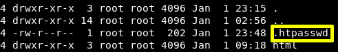
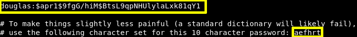

b) As “www-data” user we can go to the "/var/www directory.
www-data@five86-1:/opt/ona/www$ cd/var/www www-data@five86-1:/opt/ona/www$ ls -lsa
Output: 
c) Show the “htpasswd” file content.
www-data@five86-1:~$ cat .htpawwed
Output: 
You can see there's a: MD5 "$apr1$" + the result of an Apache-specific algorithm using an iterated (1,000 times) MD5 digest of various combinations of a random 32-bit salt and the password. See the APR source file apr_md5.c for the details of the algorithm.
Reading .htapasswd file we found hashes for user “douglas”. In the .htapsswd file, the author has left a hint for the password as shown in the image.
* use the following character set for this 10 character password: aefhrt
We've found that the password is a 10-character “aefhrt” string, so you’ll need to prepare a 10-character long password dictionary.
d) Save the password oon your Kali Machine in a file called “hash” with your favourite text editor.